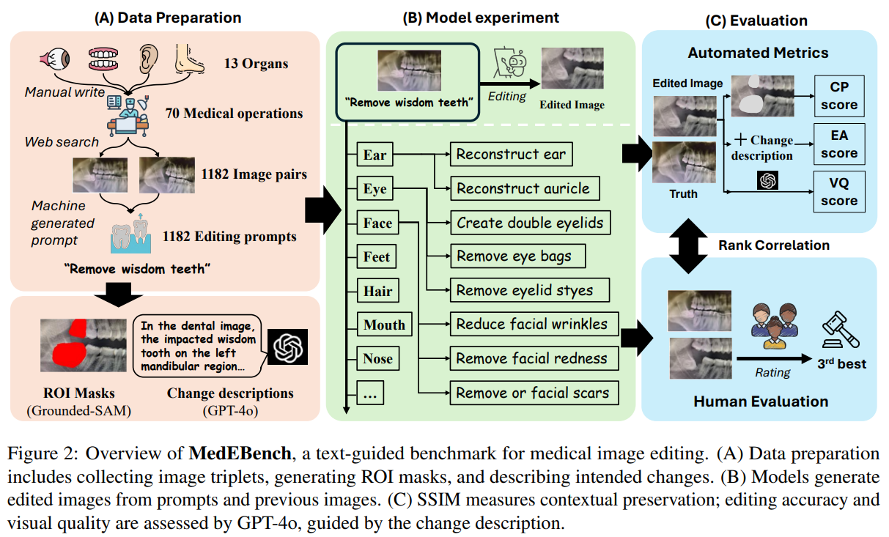

A Benchmark for Evaluating Purchase Intention Comprehension Abilities of Large Language Models in E-commerce
Wenxuan Ding*, Weiqi Wang*, Sze Heng Douglas Kwok, Minghao Liu, Tianqing Fang, Jiaxin Bai, Xin Liu, Changlong Yu, Zheng Li, Chen Luo, Qingyu Yin, Bing Yin, Junxian He, Yangqiu Song. Findings of EMNLP 2024
[paper] |
[code]
MedEBench: Diagnosing Reliability in Text-Guided Medical Image Editing Minghao Liu, Zhitao He, Zhiyuan Fan, Qingyun Wang, Yi R. Fung Findings of EMNLP 2025
[paper] |
[website]

LeanForPhysics: Comprehensive Reasoning Framework for University-level Physics in Lean4
Yuxin Li*, Minghao Liu*, Ruida Wang*, Ji Wenzhao, Zhitao He, Rui Pan, Junming Huang, Tong Zhang, Yi R. Fung ICLR 2026 (in submission)
* Equal contribution (part of FYP by Yuxin Li & Minghao Liu)
[paper] |
[code] |
[dataset]
Scaling Environments for LLM Agents in the Era of Learning from Interaction: A Survey
Yuchen Huang, Sijia Li, Minghao Liu, Wei Liu, Zhiyuan Fan, Yi R. (May) Fung NeurIPS 2025 SEA
[paper]